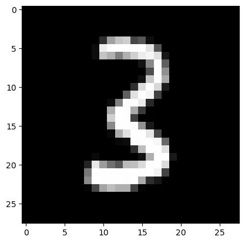

import pickle,gzip,math,os,time,shutil,torch,matplotlib as mpl,numpy as np,matplotlib.pyplot as plt
from pathlib import Path
from torch import tensor,nn
import torch.nn.functional as FMini Batch
Mini Batch
from fastcore.test import test_close
torch.set_printoptions(precision=2, linewidth=140, sci_mode=False)
torch.manual_seed(1)
mpl.rcParams['image.cmap'] = 'gray'
path_data = Path('Data')
path_gz = path_data/'mnist.pkl.gz'
with gzip.open(path_gz, 'rb') as f: ((x_train, y_train), (x_valid, y_valid), _) = pickle.load(f, encoding='latin-1')
x_train, y_train, x_valid, y_valid = map(tensor, [x_train, y_train, x_valid, y_valid])Initial setup
Data
n,m = x_train.shape
c = y_train.max()+1
nh = 20class Model(nn.Module):
def __init__(self, n_in, nh, n_out):
super().__init__()
self.layers = [nn.Linear(n_in,nh), nn.ReLU(), nn.Linear(nh,n_out)]
def __call__(self, x):
for l in self.layers: x = l(x)
return xModel
Model (n_in, nh, n_out)
Base class for all neural network modules.
Your models should also subclass this class.
Modules can also contain other Modules, allowing to nest them in a tree structure. You can assign the submodules as regular attributes::
import torch.nn as nn
import torch.nn.functional as F
class Model(nn.Module):
def __init__(self):
super().__init__()
self.conv1 = nn.Conv2d(1, 20, 5)
self.conv2 = nn.Conv2d(20, 20, 5)
def forward(self, x):
x = F.relu(self.conv1(x))
return F.relu(self.conv2(x))Submodules assigned in this way will be registered, and will have their parameters converted too when you call :meth:to, etc.
.. note:: As per the example above, an __init__() call to the parent class must be made before assignment on the child.
:ivar training: Boolean represents whether this module is in training or evaluation mode. :vartype training: bool
model = Model(m, nh, 10)
pred = model(x_train)
pred.shapetorch.Size([50000, 10])Cross entropy loss
First, we will need to compute the softmax of our activations. This is defined by:
\[\hbox{softmax(x)}_{i} = \frac{e^{x_{i}}}{e^{x_{0}} + e^{x_{1}} + \cdots + e^{x_{n-1}}}\]
or more concisely:
\[\hbox{softmax(x)}_{i} = \frac{e^{x_{i}}}{\sum\limits_{0 \leq j \lt n} e^{x_{j}}}\]
In practice, we will need the log of the softmax when we calculate the loss.
def log_softmax(x): return (x.exp()/(x.exp().sum(-1,keepdim=True))).log()log_softmax
log_softmax (x)
log_softmax(pred)tensor([[-1.92, -2.34, -2.38, ..., -2.53, -2.64, -2.51],
[-2.02, -2.34, -2.29, ..., -2.56, -2.60, -2.45],
[-1.90, -2.38, -2.31, ..., -2.39, -2.59, -2.48],
...,
[-1.97, -2.29, -2.28, ..., -2.59, -2.64, -2.57],
[-1.94, -2.35, -2.20, ..., -2.56, -2.72, -2.58],
[-2.04, -2.28, -2.26, ..., -2.60, -2.65, -2.61]], grad_fn=<LogBackward0>)Note that the formula
\[\log \left ( \frac{a}{b} \right ) = \log(a) - \log(b)\]
gives a simplification when we compute the log softmax
\[\log \left ( ab \right ) = \log(a) + \log(b)\]
def log_softmax(x): return x - x.exp().sum(-1,keepdim=True).log()log_softmax
log_softmax (x)
Then, there is a way to compute the log of the sum of exponentials in a more stable way, called the LogSumExp trick. The idea is to use the following formula:
\[\log \left ( \sum_{j=1}^{n} e^{x_{j}} \right ) = \log \left ( e^{a} \sum_{j=1}^{n} e^{x_{j}-a} \right ) = a + \log \left ( \sum_{j=1}^{n} e^{x_{j}-a} \right )\]
where a is the maximum of the \(x_{j}\).
def logsumexp(x):
m = x.max(-1)[0]
return m + (x-m[:,None]).exp().sum(-1).log()logsumexp
logsumexp (x)
This way, we will avoid an overflow when taking the exponential of a big activation. In PyTorch, this is already implemented for us.
def log_softmax(x): return x - x.logsumexp(-1,keepdim=True)log_softmax
log_softmax (x)
test_close(logsumexp(pred), pred.logsumexp(-1))
sm_pred = log_softmax(pred)
sm_predtensor([[-1.92, -2.34, -2.38, ..., -2.53, -2.64, -2.51],
[-2.02, -2.34, -2.29, ..., -2.56, -2.60, -2.45],
[-1.90, -2.38, -2.31, ..., -2.39, -2.59, -2.48],
...,
[-1.97, -2.29, -2.28, ..., -2.59, -2.64, -2.57],
[-1.94, -2.35, -2.20, ..., -2.56, -2.72, -2.58],
[-2.04, -2.28, -2.26, ..., -2.60, -2.65, -2.61]], grad_fn=<SubBackward0>)The cross entropy loss for some target \(x\) and some prediction \(p(x)\) is given by:
\[ -\sum x\, \log p(x) \]
But since our \(x\)s are 1-hot encoded (actually, they’re just the integer indices), this can be rewritten as \(-\log(p_{i})\) where i is the index of the desired target.
This can be done using numpy-style integer array indexing. Note that PyTorch supports all the tricks in the advanced indexing methods discussed in that link.
y_train[:3]tensor([5, 0, 4])sm_pred[0,5],sm_pred[1,0],sm_pred[2,4](tensor(-2.26, grad_fn=<SelectBackward0>),
tensor(-2.02, grad_fn=<SelectBackward0>),
tensor(-2.37, grad_fn=<SelectBackward0>))sm_pred[[0,1,2], y_train[:3]]tensor([-2.26, -2.02, -2.37], grad_fn=<IndexBackward0>)def nll(input, target): return -input[range(target.shape[0]), target].mean()nll
nll (input, target)
loss = nll(sm_pred, y_train)
losstensor(2.33, grad_fn=<NegBackward0>)Then use PyTorch’s implementation.
test_close(F.nll_loss(F.log_softmax(pred, -1), y_train), loss, 1e-3)In PyTorch, F.log_softmax and F.nll_loss are combined in one optimized function, F.cross_entropy.
test_close(F.cross_entropy(pred, y_train), loss, 1e-3)Basic training loop
Basically the training loop repeats over the following steps: - get the output of the model on a batch of inputs - compare the output to the labels we have and compute a loss - calculate the gradients of the loss with respect to every parameter of the model - update said parameters with those gradients to make them a little bit better
loss_func = F.cross_entropybs=50 # batch size
xb = x_train[0:bs] # a mini-batch from x
preds = model(xb) # predictions
preds[0], preds.shape(tensor([ 0.37, -0.06, -0.10, 0.13, 0.04, 0.02, 0.05, -0.25, -0.35, -0.22], grad_fn=<SelectBackward0>),
torch.Size([50, 10]))yb = y_train[0:bs]
ybtensor([5, 0, 4, 1, 9, 2, 1, 3, 1, 4, 3, 5, 3, 6, 1, 7, 2, 8, 6, 9, 4, 0, 9, 1, 1, 2, 4, 3, 2, 7, 3, 8, 6, 9, 0, 5, 6, 0, 7, 6, 1, 8, 7, 9,
3, 9, 8, 5, 9, 3])loss_func(preds, yb)tensor(2.33, grad_fn=<NllLossBackward0>)preds[:5]tensor([[ 0.37, -0.06, -0.10, 0.13, 0.04, 0.02, 0.05, -0.25, -0.35, -0.22],
[ 0.23, -0.08, -0.03, 0.16, 0.00, -0.06, 0.01, -0.31, -0.35, -0.20],
[ 0.37, -0.10, -0.03, 0.10, -0.09, 0.02, -0.05, -0.12, -0.32, -0.21],
[ 0.26, 0.05, 0.08, 0.27, 0.06, 0.02, 0.13, -0.31, -0.36, -0.29],
[ 0.28, -0.09, 0.07, 0.23, 0.12, 0.08, 0.03, -0.36, -0.35, -0.23]], grad_fn=<SliceBackward0>)preds.argmax(dim=1)tensor([0, 0, 0, 3, 0, 0, 0, 0, 0, 0, 0, 0, 0, 3, 3, 0, 0, 0, 0, 0, 0, 0, 0, 0, 0, 0, 0, 0, 0, 3, 0, 0, 0, 0, 0, 0, 0, 0, 0, 0, 0, 3, 0, 0,
0, 0, 0, 0, 0, 0])def accuracy(out, yb): return (out.argmax(dim=1)==yb).float().mean()accuracy
accuracy (out, yb)
accuracy(preds, yb)tensor(0.08)lr = 0.5 # learning rate
epochs = 10 # how many epochs to train fordef report(loss, preds, yb): print(f'{loss:.2f}, {accuracy(preds, yb):.2f}')report
report (loss, preds, yb)
xb,yb = x_train[:bs],y_train[:bs]
preds = model(xb)
report(loss_func(preds, yb), preds, yb)2.33, 0.08for epoch in range(epochs):
for i in range(0, n, bs):
s = slice(i, min(n,i+bs))
xb,yb = x_train[s],y_train[s]
preds = model(xb)
loss = loss_func(preds, yb)
loss.backward()
with torch.no_grad():
for l in model.layers:
if hasattr(l, 'weight'):
l.weight -= l.weight.grad * lr
l.bias -= l.bias.grad * lr
l.weight.grad.zero_()
l.bias .grad.zero_()
report(loss, preds, yb)0.12, 0.96
0.15, 0.92
0.11, 0.96
0.12, 0.94
0.10, 0.96
0.08, 0.98
0.09, 0.98
0.08, 0.96
0.07, 0.96
0.08, 0.98$L = l(n(w,x)) N=n(w,x) and L= l(N) $
$ = $
Using parameters and optim
Parameters
m1 = nn.Module()
m1.foo = nn.Linear(3,4)
m1Module(
(foo): Linear(in_features=3, out_features=4, bias=True)
)list(m1.named_children())[('foo', Linear(in_features=3, out_features=4, bias=True))]m1.named_children()<generator object Module.named_children>list(m1.parameters())[Parameter containing:
tensor([[ 0.57, 0.43, -0.30],
[ 0.13, -0.32, -0.24],
[ 0.51, 0.04, 0.22],
[ 0.13, -0.17, -0.24]], requires_grad=True),
Parameter containing:
tensor([-0.01, -0.51, -0.39, 0.56], requires_grad=True)]class MLP(nn.Module):
def __init__(self, n_in, nh, n_out):
super().__init__()
self.l1 = nn.Linear(n_in,nh)
self.l2 = nn.Linear(nh,n_out)
self.relu = nn.ReLU()
def forward(self, x): return self.l2(self.relu(self.l1(x)))MLP
MLP (n_in, nh, n_out)
Base class for all neural network modules.
Your models should also subclass this class.
Modules can also contain other Modules, allowing to nest them in a tree structure. You can assign the submodules as regular attributes::
import torch.nn as nn
import torch.nn.functional as F
class Model(nn.Module):
def __init__(self):
super().__init__()
self.conv1 = nn.Conv2d(1, 20, 5)
self.conv2 = nn.Conv2d(20, 20, 5)
def forward(self, x):
x = F.relu(self.conv1(x))
return F.relu(self.conv2(x))Submodules assigned in this way will be registered, and will have their parameters converted too when you call :meth:to, etc.
.. note:: As per the example above, an __init__() call to the parent class must be made before assignment on the child.
:ivar training: Boolean represents whether this module is in training or evaluation mode. :vartype training: bool
model = MLP(m, nh, 10)
model.l1Linear(in_features=784, out_features=20, bias=True)modelMLP(
(l1): Linear(in_features=784, out_features=20, bias=True)
(l2): Linear(in_features=20, out_features=10, bias=True)
(relu): ReLU()
)for name,l in model.named_children(): print(f"{name}: {l}")l1: Linear(in_features=784, out_features=20, bias=True)
l2: Linear(in_features=20, out_features=10, bias=True)
relu: ReLU()for p in model.parameters(): print(p.shape)torch.Size([20, 784])
torch.Size([20])
torch.Size([10, 20])
torch.Size([10])def fit():
for epoch in range(epochs):
for i in range(0, n, bs):
s = slice(i, min(n,i+bs))
xb,yb = x_train[s],y_train[s]
preds = model(xb)
loss = loss_func(preds, yb)
loss.backward()
with torch.no_grad():
for p in model.parameters(): p -= p.grad * lr
model.zero_grad()
report(loss, preds, yb)fit
fit ()
fit()0.22, 0.90
0.21, 0.94
0.21, 0.94
0.22, 0.94
0.21, 0.96
0.21, 0.94
0.19, 0.94
0.19, 0.92
0.18, 0.94
0.17, 0.94Behind the scenes, PyTorch overrides the __setattr__ function in nn.Module so that the submodules you define are properly registered as parameters of the model.
class MyModule:
def __init__(self, n_in, nh, n_out):
self._modules = {}
self.l1 = nn.Linear(n_in,nh)
self.l2 = nn.Linear(nh,n_out)
def __setattr__(self,k,v):
if not k.startswith("_"): self._modules[k] = v
super().__setattr__(k,v)
def __repr__(self): return f'{self._modules}'
def parameters(self):
for l in self._modules.values(): yield from l.parameters()MyModule
MyModule (n_in, nh, n_out)
Initialize self. See help(type(self)) for accurate signature.
mdl = MyModule(m,nh,10)
mdl{'l1': Linear(in_features=784, out_features=20, bias=True), 'l2': Linear(in_features=20, out_features=10, bias=True)}for p in mdl.parameters(): print(p.shape)torch.Size([20, 784])
torch.Size([20])
torch.Size([10, 20])
torch.Size([10])Registering modules
from functools import reduceWe can use the original layers approach, but we have to register the modules.
layers = [nn.Linear(m,nh), nn.ReLU(), nn.Linear(nh,10)]class Model(nn.Module):
def __init__(self, layers):
super().__init__()
self.layers = layers
for i,l in enumerate(self.layers): self.add_module(f'layer_{i}', l)
def forward(self, x): return reduce(lambda val,layer: layer(val), self.layers, x)Model
Model (layers)
Base class for all neural network modules.
Your models should also subclass this class.
Modules can also contain other Modules, allowing to nest them in a tree structure. You can assign the submodules as regular attributes::
import torch.nn as nn
import torch.nn.functional as F
class Model(nn.Module):
def __init__(self):
super().__init__()
self.conv1 = nn.Conv2d(1, 20, 5)
self.conv2 = nn.Conv2d(20, 20, 5)
def forward(self, x):
x = F.relu(self.conv1(x))
return F.relu(self.conv2(x))Submodules assigned in this way will be registered, and will have their parameters converted too when you call :meth:to, etc.
.. note:: As per the example above, an __init__() call to the parent class must be made before assignment on the child.
:ivar training: Boolean represents whether this module is in training or evaluation mode. :vartype training: bool
model = Model(layers)
modelModel(
(layer_0): Linear(in_features=784, out_features=20, bias=True)
(layer_1): ReLU()
(layer_2): Linear(in_features=20, out_features=10, bias=True)
)model(xb).shapetorch.Size([50, 10])nn.ModuleList
nn.ModuleList does this for us.
class SequentialModel(nn.Module):
def __init__(self, layers):
super().__init__()
self.layers = nn.ModuleList(layers)
def forward(self, x):
for l in self.layers: x = l(x)
return xSequentialModel
SequentialModel (layers)
Base class for all neural network modules.
Your models should also subclass this class.
Modules can also contain other Modules, allowing to nest them in a tree structure. You can assign the submodules as regular attributes::
import torch.nn as nn
import torch.nn.functional as F
class Model(nn.Module):
def __init__(self):
super().__init__()
self.conv1 = nn.Conv2d(1, 20, 5)
self.conv2 = nn.Conv2d(20, 20, 5)
def forward(self, x):
x = F.relu(self.conv1(x))
return F.relu(self.conv2(x))Submodules assigned in this way will be registered, and will have their parameters converted too when you call :meth:to, etc.
.. note:: As per the example above, an __init__() call to the parent class must be made before assignment on the child.
:ivar training: Boolean represents whether this module is in training or evaluation mode. :vartype training: bool
model = SequentialModel(layers)
modelSequentialModel(
(layers): ModuleList(
(0): Linear(in_features=784, out_features=20, bias=True)
(1): ReLU()
(2): Linear(in_features=20, out_features=10, bias=True)
)
)fit()0.21, 0.92
0.20, 0.96
0.13, 0.98
0.08, 0.98
0.08, 0.98
0.14, 0.94
0.12, 0.94
0.12, 0.94
0.09, 0.96
0.06, 0.98nn.Sequential
nn.Sequential is a convenient class which does the same as the above:
model = nn.Sequential(nn.Linear(m,nh), nn.ReLU(), nn.Linear(nh,10))fit()
loss_func(model(xb), yb), accuracy(model(xb), yb)0.12, 0.94
0.12, 0.98
0.16, 0.96
0.11, 0.98
0.22, 0.96
0.14, 0.96
0.20, 0.96
0.13, 0.98
0.07, 0.98
0.07, 0.96(tensor(0.02, grad_fn=<NllLossBackward0>), tensor(1.))modelSequential(
(0): Linear(in_features=784, out_features=20, bias=True)
(1): ReLU()
(2): Linear(in_features=20, out_features=10, bias=True)
)optim
class Optimizer():
def __init__(self, params, lr=0.5): self.params,self.lr=list(params),lr
def step(self):
with torch.no_grad():
for p in self.params: p -= p.grad * self.lr
def zero_grad(self):
for p in self.params: p.grad.data.zero_()Optimizer
Optimizer (params, lr=0.5)
Initialize self. See help(type(self)) for accurate signature.
model = nn.Sequential(nn.Linear(m,nh), nn.ReLU(), nn.Linear(nh,10))opt = Optimizer(model.parameters())for epoch in range(epochs):
for i in range(0, n, bs):
s = slice(i, min(n,i+bs))
xb,yb = x_train[s],y_train[s]
preds = model(xb)
loss = loss_func(preds, yb)
loss.backward()
opt.step()
opt.zero_grad()
report(loss, preds, yb)0.28, 0.90
0.26, 0.92
0.24, 0.92
0.23, 0.92
0.22, 0.92
0.22, 0.90
0.19, 0.92
0.21, 0.90
0.20, 0.94
0.18, 0.94PyTorch already provides this exact functionality in optim.SGD (it also handles stuff like momentum, which we’ll look at later)
from torch import optimdef get_model():
model = nn.Sequential(nn.Linear(m,nh), nn.ReLU(), nn.Linear(nh,10))
return model, optim.SGD(model.parameters(), lr=lr)get_model
get_model ()
model,opt = get_model()
loss_func(model(xb), yb)tensor(2.30, grad_fn=<NllLossBackward0>)for epoch in range(epochs):
for i in range(0, n, bs):
s = slice(i, min(n,i+bs))
xb,yb = x_train[s],y_train[s]
preds = model(xb)
loss = loss_func(preds, yb)
loss.backward()
opt.step()
opt.zero_grad()
report(loss, preds, yb)0.22, 0.94
0.15, 0.94
0.11, 0.96
0.09, 0.98
0.09, 0.98
0.09, 0.98
0.09, 0.98
0.08, 0.98
0.05, 0.98
0.06, 0.98Dataset and DataLoader
Dataset
It’s clunky to iterate through minibatches of x and y values separately:
xb = x_train[s]
yb = y_train[s]Instead, let’s do these two steps together, by introducing a Dataset class:
xb,yb = train_ds[s]class Dataset():
def __init__(self, x, y): self.x,self.y = x,y
def __len__(self): return len(self.x)
def __getitem__(self, i): return self.x[i],self.y[i]Dataset
Dataset (x, y)
Initialize self. See help(type(self)) for accurate signature.
train_ds,valid_ds = Dataset(x_train, y_train),Dataset(x_valid, y_valid)
assert len(train_ds)==len(x_train)
assert len(valid_ds)==len(x_valid)xb,yb = train_ds[0:5]
assert xb.shape==(5,28*28)
assert yb.shape==(5,)
xb,yb(tensor([[0., 0., 0., ..., 0., 0., 0.],
[0., 0., 0., ..., 0., 0., 0.],
[0., 0., 0., ..., 0., 0., 0.],
[0., 0., 0., ..., 0., 0., 0.],
[0., 0., 0., ..., 0., 0., 0.]]),
tensor([5, 0, 4, 1, 9]))model,opt = get_model()for epoch in range(epochs):
for i in range(0, n, bs):
xb,yb = train_ds[i:min(n,i+bs)]
preds = model(xb)
loss = loss_func(preds, yb)
loss.backward()
opt.step()
opt.zero_grad()
report(loss, preds, yb)0.29, 0.90
0.26, 0.90
0.25, 0.90
0.21, 0.92
0.22, 0.92
0.20, 0.94
0.24, 0.88
0.24, 0.88
0.25, 0.90
0.22, 0.90DataLoader
Previously, our loop iterated over batches (xb, yb) like this:
for i in range(0, n, bs):
xb,yb = train_ds[i:min(n,i+bs)]
...Let’s make our loop much cleaner, using a data loader:
for xb,yb in train_dl:
...class DataLoader():
def __init__(self, ds, bs): self.ds,self.bs = ds,bs
def __iter__(self):
for i in range(0, len(self.ds), self.bs): yield self.ds[i:i+self.bs]DataLoader
DataLoader (ds, bs)
Initialize self. See help(type(self)) for accurate signature.
train_dl = DataLoader(train_ds, bs)
valid_dl = DataLoader(valid_ds, bs)xb,yb = next(iter(valid_dl))
xb.shapetorch.Size([50, 784])ybtensor([3, 8, 6, 9, 6, 4, 5, 3, 8, 4, 5, 2, 3, 8, 4, 8, 1, 5, 0, 5, 9, 7, 4, 1, 0, 3, 0, 6, 2, 9, 9, 4, 1, 3, 6, 8, 0, 7, 7, 6, 8, 9, 0, 3,
8, 3, 7, 7, 8, 4])plt.imshow(xb[0].view(28,28))
yb[0]tensor(3)
model,opt = get_model()def fit():
for epoch in range(epochs):
for xb,yb in train_dl:
preds = model(xb)
loss = loss_func(preds, yb)
loss.backward()
opt.step()
opt.zero_grad()
report(loss, preds, yb)fit
fit ()
fit()
loss_func(model(xb), yb), accuracy(model(xb), yb)0.32, 0.90
0.25, 0.90
0.22, 0.90
0.21, 0.92
0.17, 0.94
0.15, 0.94
0.13, 0.96
0.13, 0.94
0.12, 0.96
0.12, 0.98(tensor(0.15, grad_fn=<NllLossBackward0>), tensor(0.96))Random sampling
We want our training set to be in a random order, and that order should differ each iteration. But the validation set shouldn’t be randomized.
import randomclass Sampler():
def __init__(self, ds, shuffle=False): self.n,self.shuffle = len(ds),shuffle
def __iter__(self):
res = list(range(self.n))
if self.shuffle: random.shuffle(res)
return iter(res)Sampler
Sampler (ds, shuffle=False)
Initialize self. See help(type(self)) for accurate signature.
from itertools import islicess = Sampler(train_ds)it = iter(ss)
for o in range(5): print(next(it))0
1
2
3
4list(islice(ss, 5))[0, 1, 2, 3, 4]ss = Sampler(train_ds, shuffle=True)
list(islice(ss, 5))[38864, 48491, 457, 38117, 46961]import fastcore.all as fcclass BatchSampler():
def __init__(self, sampler, bs, drop_last=False): fc.store_attr()
def __iter__(self): yield from fc.chunked(iter(self.sampler), self.bs, drop_last=self.drop_last)BatchSampler
BatchSampler (sampler, bs, drop_last=False)
Initialize self. See help(type(self)) for accurate signature.
batchs = BatchSampler(ss, 4)
list(islice(batchs, 5))[[48663, 21900, 25004, 10521],
[2935, 15296, 32118, 49052],
[9673, 12394, 26887, 23110],
[11959, 11965, 44887, 23025],
[7462, 42558, 2649, 48055]]def collate(b):
xs,ys = zip(*b)
return torch.stack(xs),torch.stack(ys)collate
collate (b)
class DataLoader():
def __init__(self, ds, batchs, collate_fn=collate): fc.store_attr()
def __iter__(self): yield from (self.collate_fn(self.ds[i] for i in b) for b in self.batchs)DataLoader
DataLoader (ds, batchs, collate_fn=<function collate>)
Initialize self. See help(type(self)) for accurate signature.
train_samp = BatchSampler(Sampler(train_ds, shuffle=True ), bs)
valid_samp = BatchSampler(Sampler(valid_ds, shuffle=False), bs)train_dl = DataLoader(train_ds, batchs=train_samp)
valid_dl = DataLoader(valid_ds, batchs=valid_samp)xb,yb = next(iter(valid_dl))
plt.imshow(xb[0].view(28,28))
yb[0]tensor(3)
xb.shape,yb.shape(torch.Size([50, 784]), torch.Size([50]))model,opt = get_model()fit()0.48, 0.86
0.14, 0.96
0.18, 0.94
0.11, 0.96
0.13, 0.98
0.12, 0.94
0.08, 0.98
0.16, 0.96
0.28, 0.94
0.10, 0.96Multiprocessing DataLoader
import torch.multiprocessing as mp
from fastcore.basics import store_attrtrain_ds[[3,6,8,1]](tensor([[0., 0., 0., ..., 0., 0., 0.],
[0., 0., 0., ..., 0., 0., 0.],
[0., 0., 0., ..., 0., 0., 0.],
[0., 0., 0., ..., 0., 0., 0.]]),
tensor([1, 1, 1, 0]))train_ds.__getitem__([3,6,8,1])(tensor([[0., 0., 0., ..., 0., 0., 0.],
[0., 0., 0., ..., 0., 0., 0.],
[0., 0., 0., ..., 0., 0., 0.],
[0., 0., 0., ..., 0., 0., 0.]]),
tensor([1, 1, 1, 0]))for o in map(train_ds.__getitem__, ([3,6],[8,1])): print(o)(tensor([[0., 0., 0., ..., 0., 0., 0.],
[0., 0., 0., ..., 0., 0., 0.]]), tensor([1, 1]))
(tensor([[0., 0., 0., ..., 0., 0., 0.],
[0., 0., 0., ..., 0., 0., 0.]]), tensor([1, 0]))class DataLoader():
def __init__(self, ds, batchs, n_workers=1, collate_fn=collate): fc.store_attr()
def __iter__(self):
with mp.Pool(self.n_workers) as ex: yield from ex.map(self.ds.__getitem__, iter(self.batchs))DataLoader
DataLoader (ds, batchs, n_workers=1, collate_fn=<function collate>)
Initialize self. See help(type(self)) for accurate signature.
train_dl = DataLoader(train_ds, batchs=train_samp, n_workers=2)
it = iter(train_dl)xb,yb = next(it)
xb.shape,yb.shape(torch.Size([50, 784]), torch.Size([50]))PyTorch DataLoader
from torch.utils.data import DataLoader, SequentialSampler, RandomSampler, BatchSamplertrain_samp = BatchSampler(RandomSampler(train_ds), bs, drop_last=False)
valid_samp = BatchSampler(SequentialSampler(valid_ds), bs, drop_last=False)train_dl = DataLoader(train_ds, batch_sampler=train_samp, collate_fn=collate)
valid_dl = DataLoader(valid_ds, batch_sampler=valid_samp, collate_fn=collate)model,opt = get_model()
fit()
loss_func(model(xb), yb), accuracy(model(xb), yb)0.21, 0.92
0.33, 0.88
0.21, 0.96
0.31, 0.92
0.10, 0.98
0.09, 0.96
0.21, 0.94
0.15, 0.98
0.23, 0.94
0.03, 1.00(tensor(0.07, grad_fn=<NllLossBackward0>), tensor(0.96))PyTorch can auto-generate the BatchSampler for us:
train_dl = DataLoader(train_ds, bs, sampler=RandomSampler(train_ds), collate_fn=collate)
valid_dl = DataLoader(valid_ds, bs, sampler=SequentialSampler(valid_ds), collate_fn=collate)PyTorch can also generate the Sequential/RandomSamplers too:
train_dl = DataLoader(train_ds, bs, shuffle=True, drop_last=True, num_workers=2)
valid_dl = DataLoader(valid_ds, bs, shuffle=False, num_workers=2)model,opt = get_model()
fit()
loss_func(model(xb), yb), accuracy(model(xb), yb)0.20, 0.92
0.27, 0.96
0.25, 0.92
0.02, 1.00
0.07, 1.00
0.25, 0.92
0.35, 0.94
0.19, 0.90
0.02, 1.00
0.20, 0.94(tensor(0.06, grad_fn=<NllLossBackward0>), tensor(0.98))Our dataset actually already knows how to sample a batch of indices all at once:
train_ds[[4,6,7]](tensor([[0., 0., 0., ..., 0., 0., 0.],
[0., 0., 0., ..., 0., 0., 0.],
[0., 0., 0., ..., 0., 0., 0.]]),
tensor([9, 1, 3]))…that means that we can actually skip the batch_sampler and collate_fn entirely:
train_dl = DataLoader(train_ds, sampler=train_samp)
valid_dl = DataLoader(valid_ds, sampler=valid_samp)xb,yb = next(iter(train_dl))
xb.shape,yb.shape(torch.Size([1, 50, 784]), torch.Size([1, 50]))Validation
You always should also have a validation set, in order to identify if you are overfitting.
We will calculate and print the validation loss at the end of each epoch.
(Note that we always call model.train() before training, and model.eval() before inference, because these are used by layers such as nn.BatchNorm2d and nn.Dropout to ensure appropriate behaviour for these different phases.)
def fit(epochs, model, loss_func, opt, train_dl, valid_dl):
for epoch in range(epochs):
model.train()
for xb,yb in train_dl:
loss = loss_func(model(xb), yb)
loss.backward()
opt.step()
opt.zero_grad()
model.eval()
with torch.no_grad():
tot_loss,tot_acc,count = 0.,0.,0
for xb,yb in valid_dl:
pred = model(xb)
n = len(xb)
count += n
tot_loss += loss_func(pred,yb).item()*n
tot_acc += accuracy (pred,yb).item()*n
print(epoch, tot_loss/count, tot_acc/count)
return tot_loss/count, tot_acc/countfit
fit (epochs, model, loss_func, opt, train_dl, valid_dl)
def get_dls(train_ds, valid_ds, bs, **kwargs):
return (DataLoader(train_ds, batch_size=bs, shuffle=True, **kwargs),
DataLoader(valid_ds, batch_size=bs*2, **kwargs))get_dls
get_dls (train_ds, valid_ds, bs, **kwargs)
Now, our whole process of obtaining the data loaders and fitting the model can be run in 3 lines of code:
train_dl,valid_dl = get_dls(train_ds, valid_ds, bs)
model,opt = get_model()0 0.20109995853155851 0.9422000014781952
1 0.1778342595230788 0.9489000052213669
2 0.19040836207568645 0.9405000030994415
3 0.16341516491025687 0.9513000059127807
4 0.1552597831375897 0.956200003027916
5 0.15336507064756005 0.9582000058889389
6 0.17772509098984302 0.9491000014543534
7 0.15932741371914744 0.9568000066280365
8 0.16316431357990951 0.9562000054121017
9 0.1839916431158781 0.9480000025033951
CPU times: user 27.6 s, sys: 40.1 s, total: 1min 7s
Wall time: 11.3 s